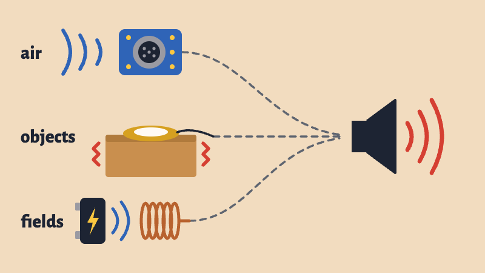

A microphone turns something you can’t see into a voltage. Send that voltage to an amplifier and a speaker, and you can hear it.
We’ll plug three kinds into the same speaker. They all get wired almost the same way, but each one listens to something different:
As you listen, think about your final project. What could it listen to?
You don’t need any code to listen. The Arduino is only giving power to the circuit, so we can hear exactly what each microphone hears.
WarningTurn the volume down before you plug anything in. The speaker has a small volume adjustment that you turn with a screwdriver, and feedback gets loud quickly.
Connect the STEMMA Speaker. This part stays the same for all three microphones:
Sound is air moving. Inside an electret microphone is a very thin sheet that moves with the air, and that movement makes a very small voltage. It’s so small that these microphones usually come on a board with an amplifier, which makes the voltage big enough to use.
Wire it up:
Talk into it or clap. Then move it slowly toward the speaker. Where does it start to howl?
The microphone hears everything in the room, including the speaker it’s plugged into. When it gets too close, this happens:
This loop is called feedback. In a fraction of a second it grows into a howl, and it stops as soon as you move the microphone away.
Feedback is usually a mistake that someone rushes to fix. Steve Reich used it on purpose. As you watch, ask: what’s in the loop?
The Arduino can listen too. Take the microphone’s OUT wire off the speaker and connect it to A0:
Keep VCC on 3.3V. The microphone’s output can swing as high as its power, and A0 only takes 3.3V.
A microphone’s reading swings up and down around a middle value, so one reading doesn’t tell you how loud it is. This sketch listens for 50 milliseconds and remembers the lowest and highest readings. The bigger the difference between them, the louder the sound. It’s the same idea as the calibration in the Light Theremin.
// Electret microphone: how loud is it?
// Wiring: VCC to 3.3V, GND to GND, OUT to A0
int micPin = A0;
int threshold = 100; // loudness that turns on the LED (change this)
void setup() {
Serial.begin(9600);
pinMode(LED_BUILTIN, OUTPUT);
}
void loop() {
int lowest = 1023; // start high, so any reading will be lower
int highest = 0; // start low, so any reading will be higher
// listen for 50 milliseconds, remembering the lowest and highest readings
unsigned long start = millis();
while (millis() - start < 50) {
int reading = analogRead(micPin);
if (reading < lowest) {
lowest = reading;
}
if (reading > highest) {
highest = reading;
}
}
// the bigger the swing, the louder the sound
int loudness = highest - lowest;
Serial.println(loudness);
if (loudness > threshold) {
digitalWrite(LED_BUILTIN, HIGH);
} else {
digitalWrite(LED_BUILTIN, LOW);
}
}Upload it and open the Serial Plotter. Talk,
clap and stay quiet, and watch the line. Then change
threshold so it’s above the noise in the room and
below a clap. The built-in LED should come on when you clap.
Try making it do something:
map(loudness, 0, 500, 200, 2000) to
turn loudness into a pitch for tone(). The
microphone will hear the buzzer too, so you’ve made your own
feedback loop.map() the
same way to turn loudness into an angle for a servo.A contact microphone is usually just a piezo, a thin disc that makes a small voltage whenever it’s bent or shaken. It hears very little of the air. Instead, it hears the vibrations in whatever it’s taped to.
Wire it up:
Tape one to a table and you can hear knocks, scratches and footsteps. Tape one to a box, a window or a doorstop spring and you hear the inside of that object, often with sounds you wouldn’t notice with your ears. Tap it, scratch it and drag things across it.
Then hold the speaker against the object. Can you get feedback?
The Arduino can read a piezo too. That’s what we do in the Knock lesson.
An electromagnetic pickup is a coil of wire. When the magnetic field near a coil changes, it makes a voltage in the wire. Chargers, screens, motors and lights all make changing magnetic fields as they run. You can’t hear those fields, but a coil and an amplifier turn them into sound.
A speaker is the same idea running backward: a voltage in its coil makes it move. Guitar pickups use coils too.
Any coil of wire can do this, and the more turns it has, the more it hears. A telephone pickup coil is a ready-made one with a lot of turns, made for recording phone calls. We don’t have enough pickups for everyone, so I’ll demonstrate this one with a coil of wire.
Wire it up:
If the wire has a clear coating, like magnet wire, sand the ends first so they make contact.
A coil makes a very small voltage, so this one needs more volume than the other two. Start by moving a magnet near the coil. The moving magnet changes the field, so you should hear a thump. Then hold the coil close to a phone charger, a laptop or a screen, and move it around. The sound can change a lot in just a few centimeters. Then bring it near the speaker itself.
Only hold the coil near the outside of things. It doesn’t need to touch anything, so never open a device or touch bare wires.
Coils can make feedback too. Here’s Pendulum Music again, with coils swinging instead of microphones:
It happened here. In 2007, Kubisch brought Electrical Walks to the Loop, right next to our campus, with Chicago’s Experimental Sound Studio. You can still see the brochure and map. Its advice also works for your own pickup: “Walk slowly, and sometimes just stop and turn your head around – electromagnetic fields can vary greatly within very short distances.”
Listen for yourself. The project’s site has an archive of electromagnetic sounds and virtual walks through Oslo and Tbilisi.
In the Knock lesson, we’ll connect a contact microphone to the Arduino, so your code can respond when someone knocks on something.